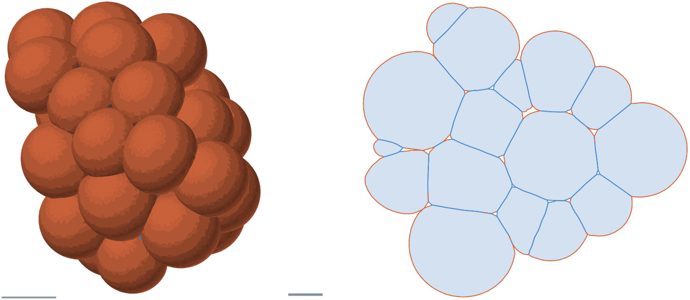

Growing cell: full and overdamped dynamics#
Grow and divide a single spherical cell under the two dynamic models of SimuCell3D: the full equations of motion integrated with semi-implicit Euler, and the overdamped equations integrated with forward Euler. The two parameter files are the default files of release 1.0, and each was written for its own compile-time configuration.
Files: parameters/core/parameters_default_dynamic.xml,
parameters/core/parameters_default_overdamped.xml, data/input_meshes/big_sphere.vtk (one
cell, about 30 µm in diameter).
Compile-time configuration: not the defaults; each file needs its own build
(Compile-time configuration).
Length: very long. \(10^{-2}\) s of simulated time at a time step of 1e-7 s (100,000
iterations), with a growing number of cells.
Measured run time: more than a day for each file (about 45,800 and 81,700 iterations in 24 hours)
with a release candidate of 2.1 on an 8-core cloud machine (GCP c2-standard-16, 8 threads), November 2026
(What to expect).


The dynamic file after 18,000 iterations (34 cells), built with contact model 1 as described below and run with a pre-release build of 2.1, not 2.1.0: 3D view (left, bar 20 µm) and mid-plane cut (right, bar 10 µm). The cells grow, divide and pack with flat shared walls.#
Compile-time configuration#
Neither file matches the default build. Before each run, set the macros in
include/global_configuration.hpp and rebuild:
Parameter file |
|
|
|
|---|---|---|---|
|
1 |
1 (node-node coupling) |
0 (full equations, semi-implicit Euler) |
|
1 |
0 (node-face springs) |
1 (overdamped, forward Euler) |
default build |
1 |
2 (face-face coupling) |
0 |
For example, for the dynamic file, change #define CONTACT_MODEL_INDEX 2 to
#define CONTACT_MODEL_INDEX 1, then from the build/ directory:
$ make -j4
$ ./simucell3d ../parameters/core/parameters_default_dynamic.xml --threads=1
Contact models 0 and 1 add contact forces to the nodes of neighbouring cells without an atomic
add, so with more than one thread some contact forces can be lost, without a warning (a known
issue of 2.1, Contact between cells). Run both files with --threads=1, as above.
Restore the defaults and rebuild afterwards. The compile-time options are described in Compile-time configuration, the dynamic models in Time integration, and the contact models in Contact between cells.
Important
Running a parameter file with a build for another configuration does not produce an error: the simulation runs with a contact or dynamic model the parameters were not chosen for. Check the header comment of each parameter file.
The parameter files#
Both files use the same mesh, time step, minimum edge length (\(7.5\times10^{-7}\) m), contact
cutoffs (\(5\times10^{-7}\) m) and the five cell types of the other core files, with growth and
division enabled for the epithelial type. The input mesh is re-triangulated at the start of the
run (perform_initial_triangulation 1). They differ in:
XML tag |
|
|
Unit |
|---|---|---|---|
|
5e-10 |
3e-9 |
kg/s |
|
1e-6 |
5e-6 |
s |
|
2.5e3 |
INF |
Pa |
|
2e-11 / 2e-12 |
1e-11 / 1e-12 |
m³/s |
|
1e-15 |
0 |
J |
|
2.5e6 |
5e6 |
1/m |
|
1e9 |
0 |
N/m³ |
|
1e9 / 5e8 |
1e8 / 1e8 |
N/m³ |
The epithelial division volume is \(1.4\times10^{-14}\) m\(^3\) in both files, about the volume of the initial cell, so the first division happens early in the run. Growth rates and division volumes are drawn from normal distributions for each cell. The initial triangulation and every division also use a random generator seeded from the clock. Two runs are therefore not identical.
The output folders are simulation_results/dynamic_simulation/ and
simulation_results/overdamped_simulation/ in the repository root. The input mesh path starts
with /data/; it is found relative to the source directory after a warning.
What to look at#
Open cell_data/result_*.vtk in ParaView and colour by cell_id to follow the divisions, or by
cell_volume. The number of cells at each output time is the number of distinct cell_id values
per iteration in simulation_statistics.csv.
What to expect#
In a 24-hour test in November 2026 on an 8-core cloud machine (GCP c2-standard-16), a release
candidate of 2.1 ran the dynamic file to iteration 45,792 and 5,440 cells, and the overdamped file
to iteration 81,731 and 2,592 cells; neither reached the end, and no cell was removed. Both runs
used 8 threads, so they carry the contact-force race described above; with --threads=1 a run
takes longer. Single runs, with a sampling period of \(10^{-4}\) s.
Analytic checks of one and two cells#
The November 2026 benchmark checked the mechanics of single cells against closed-form results,
with other files than the two above: test/test_scientific_benchmarks/params_laplace_pressure.xml
(one cell of data/input_meshes/sphere.vtk, surface tension \(10^{-3}\) N/m on every face, bulk
modulus 2500 Pa, no growth, default build) and a two-cell variant of the test files that is not
shipped. Measured with 2.1.0:
Laplace pressure. The single cell settles at 745.6 Pa. That matches the exact force balance of its polyhedral mesh to the four digits the output carries, and is 1.24% above \(2\gamma/R\) for a sphere of the same volume: the mesh refiner coarsens the cell to 58 nodes, and 1.24% is the sphericity deficit of that polyhedron. The value is identical in 2.0 and every later version tested.
Contact angle of a doublet. Two cells with apical tension \(1.3\times10^{-3}\) N/m and lateral tension \(6.5\times10^{-4}\) N/m, for which the Young-Dupré relation gives a contact angle of 120°, settle at 122.7° by a sphere fit to the free surfaces. At about 70 nodes per cell, two other estimators of the angle give 135-150°, so the result is close to 120° and no more precise than that.
Release 1.0 cannot run these files: it stops at iteration 0 with the error “The refinement of the mesh of cell N failed”.
These checks use contact model 2 (or no contact); no closed-form check of contact models 0 and 1
was run (Limits of the model). From the build/ directory of a default build:
$ ./simucell3d ../test/test_scientific_benchmarks/params_laplace_pressure.xml --output-dir=../simulation_results/laplace
The pressure is the pressure column of the last row of simulation_statistics.csv.
Variant#
parameters/parameters_paper_exact.xml is parameters_default_dynamic.xml with a longer
duration (\(5\times10^{-2}\) s) and a sampling period of \(10^{-4}\) s; it needs the same build
(CONTACT_MODEL_INDEX 1).
See also
Tissue growth from a single cell: growth from one cell in the default configuration.